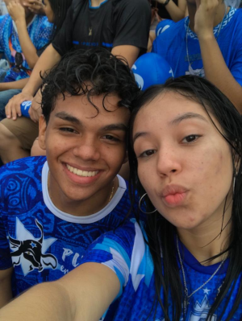

Acho essa foto incrivel, por 3 motivos;
- Essa foi a primeira vez que não odiei o fesitval
- Você ta incrivelmente fofa nessa foto
- Eu estranhamento não fiquei feio
Aqui já devia ser umas 17 horas, e começamos a viver a segunda coisa que mais significa caprichoso. A primeira é Maria Eduarda Moraes Cursino e a segunda é chuva em junho! e sim Eduarda eu até que gosto de boi e quando é junho e chove eu gosto mais do Caprichoso do que do Garantido
